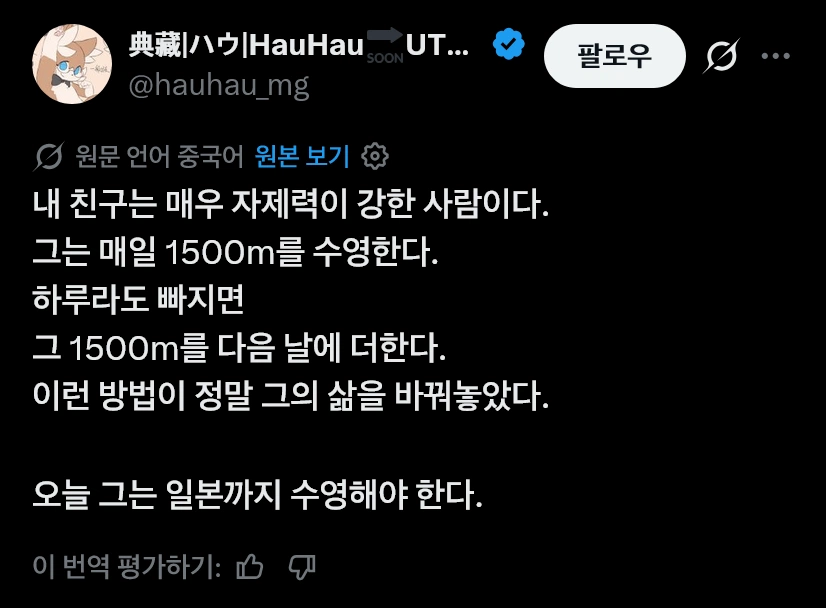

매일 1500m를 수영하는 자제력이 강한 친구
댓글
원문 '중국어' 라서 거리가 ㅋㅋㅋ
어쩔 수 없네 잘 다녀오세요
중국놈들 말 존나 웃김
그걸 중국어로 직접 들으면 짱짱짱 거려서 뭔말인지 못알아들어서 문제지
글자가 어려워서 그런지 꽉꽉 눌러 담아서 때림 ㅋㅋㅋ
저주받은언어ㅋㅋㅋㅋ
한창 수영할때 매일 1km (+200m) 하고 주말엔 2km 씩 했는데 ㅋㅋ....
1.5km 면 30~40분 정도 걸리려나
50미터도 힘든데ㅠㅠ 얼마나하면 그정도 됌?
1~2년정도 꾸준히 하면 가능할걸
나도 쉬엄쉬엄 한시간에서 한시간반이면 1.5K찍고 퇴수하니까
물론 안쉬고 한번에는 절대 못하겠슴
나 한참 수영할 때 자유레인에서 1km 연속 수영했었는데 30~40분 정도 걸렸던걸로 기억함...
(1km 연속 해야 하니까 페이스를 천천히 가져갔었음.)
문제는.... 겨털이 쓸려서 넘 아팠음 ㅠㅠ 왜 수영선수들이 제모하는지 이유를 알게됐었음 ㅋ
이거 중요함 ㅋㅋㅋㅋ 겨털 안밀면 화상입은것 처럼 피부 다쓸림
기점이 있음. 뭔가 하다보면 너 지금 10km 걸어도 별 무리 안가는것 처럼
물에서 1~2km 씩 수영하는게 자연스러워 지는 때가 생김.
초심자면 1년정도 할때 쯤 그렇게 됨
사람마다 다름. 난 인터벌은 잘 못하는데, 장거리는 돌라고 하면 3km, 5km도 안 쉬고 할 수 있음. 실제로 3년동안 항상 1.5km 자유영 후 드릴연습 포함 2.5km를 한시간 안에 하는데, 완전 수영실력 제로부터 1.5km 찍는데 까지 생각보다 몇달 안 걸렸엄.
어깨 ㄱㅊ?
이백과 두보의 나라
삶이 바뀌긴 하겠네 ㅋㅋㅋㅋㅋ
글 ㅈㄴ 웃기게 쓰네ㅋㅋㅋ
자제력이 강한거치곤 1년동안 안한거잖아 ㅋㅋㅋㅋ
자제력이 강하기때문임
수영을 자제했어요
ㅋㅋㅋㅋ
10년 뒤에 하와이 가면 되겠네
글 존나 웃기게 잘쓰네ㅋㅋㅋㅋㅋ
ㅋㅋㅋㅋ